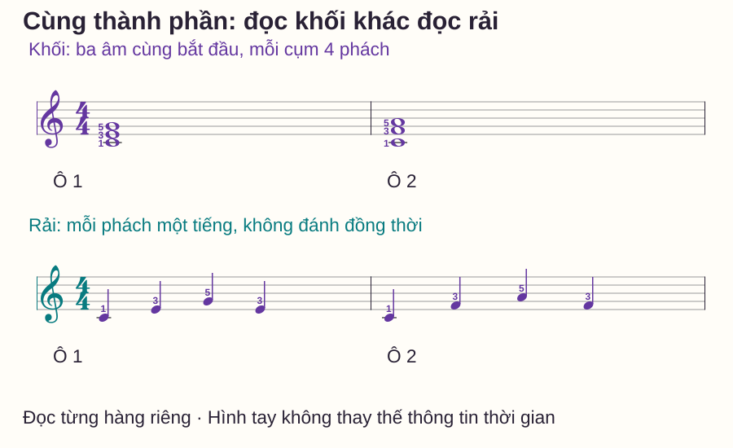
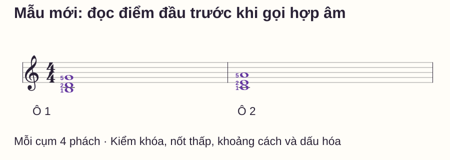

Đọc nhạc
Đọc nhóm nốt và hợp âm trên sheet piano theo hình mẫu
# Đọc nhóm nốt và hợp âm trên sheet piano theo hình mẫu
Bạn thấy một cụm ba nốt nhưng đọc lại từng nốt từ dòng đầu của khuông. Đọc riêng từng nốt vẫn cần để kiểm, nhưng nếu các cụm lặp hoặc có cùng quan hệ khoảng cách, bạn có thể khai thác thông tin đó thay vì xem mọi đầu nốt như hoàn toàn mới.
Bài này hướng dẫn cách nhận điểm xuất phát, nhìn hình nhóm rồi kiểm lại thành phần và thời gian. Bạn có mẫu hợp âm khối, mẫu rải cùng các thành phần và hai cụm mới để tự thử. Mục tiêu là đọc được thông tin trên sheet, không chỉ đặt được một thế tay đã thuộc.
Trả lời nhanh
Đọc nhóm nốt bắt đầu bằng việc nhìn khóa, xác định nốt thấp nhất của cụm và đọc khoảng cách tới các nốt còn lại. Sau đó kiểm tên từng nốt, vùng đàn, hóa biểu và dấu hóa trước khi gọi hợp âm hoặc đặt tay. Các nốt xếp dọc trong ví dụ hợp âm khối bắt đầu cùng lúc; các nốt xếp nối tiếp trong mẫu rải có thời điểm đánh riêng. Hình giống nhau không bảo đảm cùng tên hợp âm, vì nốt xuất phát hoặc dấu hóa có thể khác. Hãy kiểm bằng một nhóm mới chưa ghi tên và giải thích đường đọc, thay vì chỉ lặp lại mẫu ngón đã nhớ.
Đọc theo nhóm không có nghĩa là bỏ tên nốt
Một nhóm mang nhiều thông tin: các cao độ, quan hệ khoảng cách, trường độ, điểm cùng bắt đầu và cách đặt vào dòng thời gian. Nhìn hình giúp tổ chức việc đọc, nhưng vẫn cần kiểm điểm xuất phát và các ký hiệu có thể đổi phím.
Piano Adventures — Approach to Reading kết hợp nhận nốt riêng với đọc quãng và đường giai điệu. Bài này áp dụng nguyên tắc đó vào những cụm nhỏ: xác định mốc, nhận hình, rồi kiểm từng thành phần. Không có quy tắc chỉ nhìn một nốt rồi đoán toàn bộ phần còn lại.
Quy ước cần dùng trước khi đọc hình
C = Đô, D Rê, E Mi, F Fa, G Sol, A La, B Si. C4 là Đô giữa, nằm trên dòng phụ đầu tiên dưới khuông Sol; G4 ở dòng thứ hai từ dưới. Các vị trí dòng/khe trong bài đều đếm từ dưới lên.
Ngón 1 cái, 2 trỏ, 3 giữa, 4 áp út, 5 út. Nốt tròn trong mẫu 4/4 dài bốn phách, nốt đen một phách. Không pedal trong lượt kiểm để thấy rõ các điểm đánh mới và nhả.
Hai cụm: không phải đều là hình chồng hai quãng ba

| Mẫu | Từ thấp lên | Quan hệ cần nhìn | Hợp âm trong mẫu một tay |
|---|---|---|---|
| Cụm 1 | C4–E4–G4 | C→E quãng ba, E→G quãng ba | C trưởng thế gốc |
| Cụm 2 | C4–F4–A4 | C→F quãng bốn, F→A quãng ba | F/C, F trưởng đảo hai |
Số quãng đếm cả hai tên nốt đầu và cuối. C–D–E là ba nên C→E là quãng ba; C–D–E–F là bốn nên C→F là quãng bốn. Trong ví dụ không dấu hóa, khoảng cách trên khuông cho biết số quãng; chưa đủ để nói mọi quãng cùng số đều có cùng số nửa cung.
Ở cụm 2, nốt thấp C không phải nốt gốc F của hợp âm. Xếp lại các thành phần thành F–A–C để nhận tên, rồi xét bass thấp nhất để gọi thế. Nếu có bè trái thấp hơn cùng vang, phải xem bass toàn cụm, không chỉ phần tay phải.
Từng bước đọc một nhóm chưa ghi tên
1. Kiểm khóa, hóa biểu và dấu hóa
Đừng dùng hình của khóa Sol để đoán nốt ở khóa Fa. Xem có dấu thăng/giáng trong hóa biểu hoặc cạnh nốt không. Chẳng hạn thay E tự nhiên bằng E♭ trong C–E–G sẽ đổi phím giữa và tính chất hợp âm; hình vị trí đầu nốt riêng lẻ chưa cho toàn bộ đáp án.
Các mẫu luyện dưới không có dấu hóa để bạn tập rõ việc nhận nhóm trước. Chúng chưa kiểm khả năng đọc mọi hóa biểu hoặc dấu hóa kéo dài trong ô nhịp.
2. Chốt nốt thấp nhất và vùng đàn
Dùng mốc đã biết để đọc nốt đáy. Nói C4, không chỉ C, nếu có thể nhầm quãng tám. Sau đó chỉ đầu nốt giữa và trên, chưa đặt ngón vội.
3. Nhìn khoảng cách, rồi gọi lại tên
Với C4–F4–A4, nhận khoảng cách bốn rồi ba; gọi lại F4/A4 để kiểm đường đi. Nếu hình gợi một thế quen nhưng tên không khớp, quay lại mốc hoặc dấu hóa thay vì ép tay vào hình đã thuộc.
4. Đọc cách bắt đầu và độ dài
Trong hai ví dụ hàng trên, ba đầu nốt thuộc một cụm đồng thời. Mỗi cụm là nốt tròn: đánh tại phách 1 và giữ qua 2–3–4. Hàng dưới có bốn nốt đen riêng: mỗi phách một tiếng. Các hàng minh họa hai cách trình bày, không yêu cầu chơi cả hai tay đồng thời.
5. Tìm phím rồi chọn ngón để thực hiện
C4–E4–G4 và C4–F4–A4 dùng gợi ý ngón phải 1–3–5 từ thấp lên. Chơi từng nốt để kiểm rồi bấm cụm. Mỗi vị trí có tầm riêng; không cố giữ cả C4–A4 như một thế năm ngón cố định nếu bàn tay chưa thoải mái.
Bài tập: đọc khối trước, rải sau
Chưa đàn, che tên trong bảng và gọi ba nốt mỗi cụm trên hình. Nói thêm hai khoảng cách và thời điểm cùng bắt đầu. Mở bảng để kiểm sau, không dùng số ngón như đáp án tên nốt.
Tiếp theo, thử từng ô hàng trên riêng. Đếm một ô chuẩn bị, đánh ba âm ở 1 rồi giữ bốn phách; kết thúc lượt bằng nhả tại số 1 tiếp theo. Có thể thử 50 phách/phút với một click mỗi phách, hoặc thấp hơn nếu chưa chuẩn bị kịp. Tập mỗi cụm hai lượt có đặt lại, chưa bắt buộc nối tiếng giữa hai cụm.
Sau đó đọc hàng rải: ô 1 C4–E4–G4–E4, ô 2 C4–F4–A4–F4, ngón mỗi ô 1–3–5–3. Mỗi nốt một phách, chuyển sang nốt kế đúng số đếm. Đây là trường độ mới, không phải cách khác để thực hiện nốt tròn ở hàng trên.
Tự kiểm bằng hai cụm chưa ghi tên hợp âm

Với mỗi cụm, ghi bốn điều: nốt thấp và vùng; hai khoảng cách; ba tên thành phần; cách đánh/giữ. Sau đó mới thử gọi hợp âm. Ngón ghi trong hình chỉ giúp thực hiện vị trí; có thể che ngón ở lượt nhận nốt.
Mở đáp án và cách kiểm
Ô 1: B3–D4–G4, quãng ba rồi quãng bốn; các thành phần G–B–D là G trưởng, bass B3 nên G/B trong mẫu chỉ tay phải. Ô 2: C4–E4–A4, quãng ba rồi quãng bốn; các thành phần A–C–E là Am, bass C4 nên Am/C. Mỗi cụm đánh cùng lúc tại 1, giữ qua 2–3–4. Kết thúc lượt nhả ở 1 tiếp; ngón gợi ý 1–2–5 cho từng vị trí riêng.
Nếu đọc đúng tên nhưng gọi sai hợp âm, ôn cấu tạo và thế đảo. Nếu tên đã sai trước khi đàn, sửa khóa/mốc/quãng trước. Nếu nhận đúng cả nhóm nhưng tay chưa bấm được, giảm nhiệm vụ chuyển động; đừng dùng cùng một lời nhắc “đọc nhanh hơn” cho cả ba lỗi.
Những lỗi thường gặp
| Biểu hiện | Điều cần kiểm | Bài sửa |
|---|---|---|
| Thấy ba nốt là đoán C trưởng | Điểm đầu và khoảng cách có đúng mẫu C không? | Đọc nốt thấp, gọi hai nốt còn lại rồi mới đặt tên |
| Thấy hình giống nhau là gọi cùng hợp âm | Có bỏ qua cao độ đầu không? | So B3–D4–G4 với C4–E4–A4, nói đủ tên |
| Chơi cụm khối thành rải | Có đọc thứ tự ngang/dọc và điểm bắt đầu không? | Chỉ một cụm, nói “cùng ở 1” rồi bấm sau khi đặt sẵn |
| Chơi hàng rải cùng một lúc | Có thay trường độ bằng hình tay đã nhớ? | Gõ bốn điểm, gọi từng nốt theo từng phách |
| Đọc đúng hình nhưng bỏ dấu giáng | Có kiểm các ký hiệu trước đầu nốt không? | Chỉ dấu hóa và phím đã đổi trước khi nhận nhóm |
Routine mười phút và điều kiện mở rộng
- 0–2 phút: nhận khóa/mốc và đọc hai cụm mẫu, chưa đàn.
- 2–4 phút: nói khoảng cách, gọi nốt và kiểm lại tên hợp âm.
- 4–6 phút: bấm từng cụm rồi đọc một ô rải, giữ đúng thời gian riêng.
- 6–8 phút: đọc hai cụm tự kiểm trước khi mở đáp án.
- 8–10 phút: đặt lại, sửa một loại lỗi và thử lại một cụm chưa chắc.
Bạn có thể mở rộng khi đọc đúng cả sáu nốt ở hai cụm tự kiểm, giải thích điểm khác giữa khối/rải và thực hiện một ô đủ bốn phách tại tempo kiểm soát được. Sau nghỉ, dùng thêm một nhóm cùng mức chưa ghi tên để kiểm chuyển giao. Thuộc hai đáp án này chưa chứng minh đọc được mọi hợp âm hoặc hóa biểu.
Đọc thêm
Đọc bước liền và bước nhảy ôn quan hệ khoảng cách. Nốt mốc giúp khóa điểm xuất phát. Đảo hợp âm giải thích tên và bass khi các thành phần thay đổi thứ tự.
Câu hỏi thường gặp
Có phải lúc nào cũng đọc từ nốt thấp lên không?
Đó là quy trình khởi đầu của bài để giảm bỏ sót và kiểm bass. Khi đọc nhạc thực tế bạn còn theo giai điệu, nhịp và các bè; không coi đây là hướng mắt bắt buộc cho mọi câu.
Chỉ nhận hình có đủ để chơi đúng không?
Chưa. Cần điểm xuất phát, khóa, dấu hóa, quãng tám và thời gian. Hình là một phần thông tin, không phải nhãn hợp âm tự động.
Hợp âm khối và rải có cùng thành phần thì có cùng cách đếm không?
Không nhất thiết. Ví dụ trong bài, khối giữ bốn phách còn rải có bốn lần bắt đầu riêng. Đọc trường độ của cách viết đang có.
Có cần biết hết mọi hợp âm trước khi đọc nhóm không?
Không. Bạn có thể đọc đúng các nốt và quan hệ trước, rồi học tên hợp âm phù hợp. Tránh đoán tên để bỏ qua việc xác định cao độ.
Mọi cụm ba nốt có phải hợp âm ba trưởng hoặc thứ không?
Không. Ba âm bất kỳ có thể tạo cách kết hợp khác. Các ví dụ được chọn có thành phần của các hợp âm đã giải nghĩa, không đại diện mọi nhóm ba âm.
Tôi nên ghi tên hợp âm lên toàn bộ sheet không?
Có thể ghi ở chỗ cần phân tích, nhưng hãy giữ một lượt với mẫu chưa ghi để kiểm đọc thực. Đọc nhãn chữ có sẵn chưa chứng minh bạn đã nhận ra nhóm nốt.
Nguồn và ghi chú biên soạn
- Piano Adventures — Approach to Reading: kết hợp nhận nốt, quãng và mẫu chuyển động.
- OpenLearn — Harmony: the triad: đối chiếu thành phần và tính chất hợp âm ba. Kiểm nguồn ngày 27/10/2026.
- Các nhóm, sheet, câu tự kiểm và routine là nội dung tự biên soạn; chưa có giáo viên độc lập review hoặc thử nghiệm học viên.